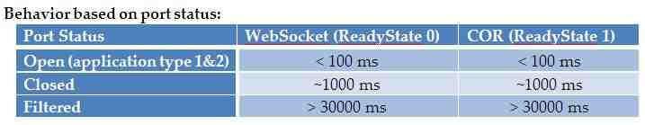

HTML5 Port Scanning
Wonderful new ‘features’ in your browser
These are secure, right?

HTMl5 Port Scanning
 http://blog.andlabs.org/2010/12/port-scanning-with-html5-and-js-recon.htmlWhat if we could just have callbacks for if a port is open?
Just port scanning?
Could also be used to fingerprint what software is being run, and make arbitary GET requests.